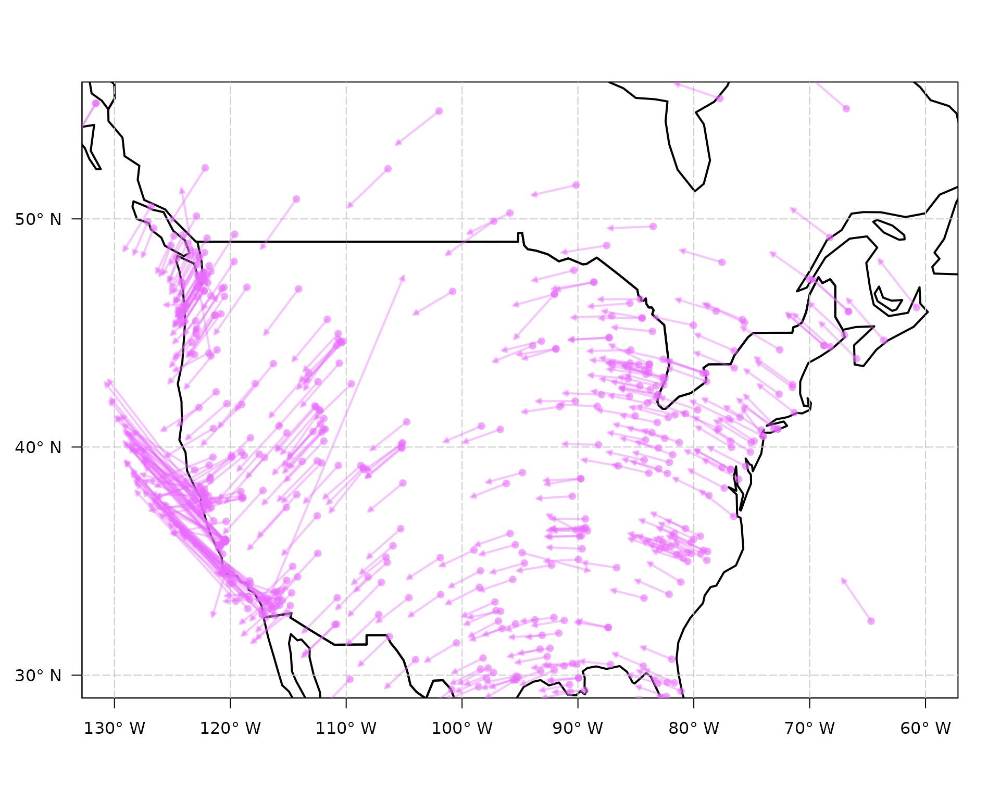

The data df_estimated_velocities_gmwmx contains
estimated northward and eastward velocities and their respective
standard deviation for a subset of 1202 GNSS station with more than 10
years of daily data.
Let us first load the gmwmx2 package.
data("df_estimated_velocities_gmwmx")
range(df_estimated_velocities_gmwmx$length_signal)## [1] 3681 11169
# define function to make color transparent
make_transparent <- function(colors, alpha = 0.5) {
# Ensure alpha is between 0 and 1
if (alpha < 0 || alpha > 1) {
stop("Alpha value must be between 0 and 1")
}
# Convert colors to RGB and add alpha
transparent_colors <- sapply(colors, function(col) {
rgb_val <- col2rgb(col) / 255
rgb(rgb_val[1], rgb_val[2], rgb_val[3], alpha = alpha)
})
return(transparent_colors)
}
# plot all stations
par(mar = c(2.5, 3.5, 1, 1))
# sett plot limits
xlims <- c(-180, 180)
ylims <- c(-90, 90)
# plot
plot(NA,
xlim = xlims, ylim = ylims, las = 1,
ylab = "", xlab = "",
xaxt = "n", yaxt = "n"
)
# Define longitude labels (X° E/W)
lon_labels <- sapply(seq(-180, 180, by = 30), function(x) {
if (x < 0) {
paste0(abs(x), "° W")
} else if (x > 0) {
paste0(x, "° E")
} else {
"0°"
}
})
# Define latitude labels (X° N/S)
lat_labels <- sapply(seq(-90, 90, by = 20), function(y) {
if (y < 0) {
paste0(abs(y), "° S")
} else if (y > 0) {
paste0(y, "° N")
} else {
"0°"
}
})
# Plot the axes
axis(side = 1, at = seq(-180, 180, by = 30), labels = lon_labels)
axis(side = 2, at = seq(-90, 90, by = 20), labels = lat_labels, las = 1)
tmp <- tempdir()
world <- geodata::world(path = tmp)
countries_sf <- st_as_sf(world)
plot(countries_sf$geometry, add = TRUE, border = "black", lwd = 2)
# # add axis
for (i in seq(-180, 180, by = 30)) {
abline(v = i, col = "grey80", lty = 5)
}
for (i in seq(-90, 90, by = 20)) {
abline(h = i, col = "grey80", lty = 5)
}
my_col <- c("#e96bff")
my_col_trans <- make_transparent(my_col, alpha = .4)
# set param for graph
shift <- 0
scale_arrow <- 200
arrow_width <- .1
arrow_lwd <- 2
for (i in seq(nrow(df_estimated_velocities_gmwmx))) {
x0 <- as.numeric(df_estimated_velocities_gmwmx[i, "longitude"])
y0 <- as.numeric(df_estimated_velocities_gmwmx[i, "latitude"])
x1 <- as.numeric(df_estimated_velocities_gmwmx[i, "longitude"] + df_estimated_velocities_gmwmx[i, "estimated_trend_E_scaled"] * scale_arrow)
y1 <- as.numeric(df_estimated_velocities_gmwmx[i, "latitude"] + df_estimated_velocities_gmwmx[i, "estimated_trend_N_scaled"] * scale_arrow)
shape::Arrows(
x0 = x0, y0 = y0, x1 = x1, y1 = y1,
col = my_col_trans,
arr.type = "triangle",
arr.length = .10,
arr.width = arrow_width,
lwd = arrow_lwd
)
}
# Zoom in the US
# set plot limits
xlims <- c(-130, -60)
ylims <- c(30, 55)
# plot
plot(NA,
xlim = xlims, ylim = ylims, las = 1,
ylab = "", xlab = "",
xaxt = "n", yaxt = "n"
)
# Define longitude labels (X° E/W)
lon_labels <- sapply(seq(-180, 180, by = 10), function(x) {
if (x < 0) {
paste0(abs(x), "° W")
} else if (x > 0) {
paste0(x, "° E")
} else {
"0°"
}
})
# Define latitude labels (X° N/S)
lat_labels <- sapply(seq(-90, 90, by = 10), function(y) {
if (y < 0) {
paste0(abs(y), "° S")
} else if (y > 0) {
paste0(y, "° N")
} else {
"0°"
}
})
# Plot the axes
axis(side = 1, at = seq(-180, 180, by = 10), labels = lon_labels)
axis(side = 2, at = seq(-90, 90, by = 10), labels = lat_labels, las = 1)
tmp <- tempdir()
world <- geodata::world(path = tmp)
countries_sf <- st_as_sf(world)
plot(countries_sf$geometry, add = TRUE, border = "black", lwd = 2)
# # add axis
for (i in seq(-180, 180, by = 10)) {
abline(v = i, col = "grey80", lty = 5)
}
for (i in seq(-90, 90, by = 10)) {
abline(h = i, col = "grey80", lty = 5)
}
my_col <- c("#e96bff")
my_col_trans <- make_transparent(my_col, alpha = .4)
# set param for graph
shift <- 0
scale_arrow <- 200
arrow_width <- .1
arrow_lwd <- 2
for (i in seq(nrow(df_estimated_velocities_gmwmx))) {
x0 <- as.numeric(df_estimated_velocities_gmwmx[i, "longitude"])
y0 <- as.numeric(df_estimated_velocities_gmwmx[i, "latitude"])
x1 <- as.numeric(df_estimated_velocities_gmwmx[i, "longitude"] + df_estimated_velocities_gmwmx[i, "estimated_trend_E_scaled"] * scale_arrow)
y1 <- as.numeric(df_estimated_velocities_gmwmx[i, "latitude"] + df_estimated_velocities_gmwmx[i, "estimated_trend_N_scaled"] * scale_arrow)
shape::Arrows(
x0 = x0, y0 = y0, x1 = x1, y1 = y1,
col = my_col_trans,
arr.type = "triangle",
arr.length = .10,
arr.width = arrow_width,
lwd = arrow_lwd
)
}
my_col_trans2 <- make_transparent(my_col, alpha = .6)
points(df_estimated_velocities_gmwmx$longitude, df_estimated_velocities_gmwmx$latitude, pch = 16, col = my_col_trans2)